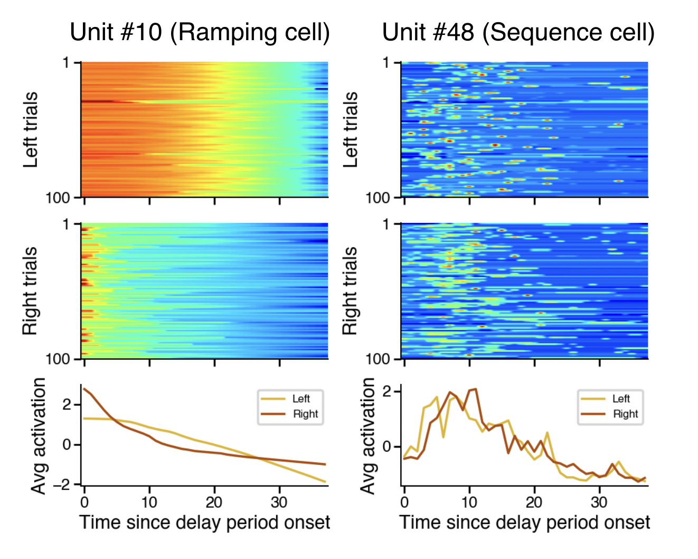

Dongyan Lin / 林冬妍
PhD Candidate in Computational Neuroscience and Artificial Intelligence
Curriculum Vitae

PhD Candidate in Computational Neuroscience and Artificial Intelligence
Hello there! My name is Dongyan (pronounced Dong-yan), I am a PhD student at Integrated Program in Neuroscience at McGill University and Mila, supervised by Dr. Blake Richards. My research interest lies at the intersection of artificial intelligence and neuroscience, with a focus on the role of memory in reinforcement learning.
I graduated from University of Toronto with Hon. B. Sc. in 2019, majoring in physiology while double-minoring in mathematics and psychology.
During my undergraduate studies, I received a combination of data analysis and experimental neuroscience training.
I investigated in vitro calcium regulation of gamma oscillation in mouse hippocampus at Prescott Lab at Sickkids Hospital.
A year later, I flew to Japan to do a research internship at RIKEN on human genome annotation under the supervision of Dr. Michiel de Hoon.
I also had the pleasure to work as the lab manager at Duncan Lab for a year.

Time cells in the rodent hippocampus are theorized to integratively encode “what happened when” by forming distinct sequences of neuronal firing over extended temporal intervals following different sensory stimuli.
However, the effects of mnemonic demands and the temporal structure of the task on time cell encoding are poorly understood. Here, we trained deep reinforcement learning models on simulated working memory tasks and found that time cells naturally emerged
in the recurrent neural network. Furthermore, we found that time cells also emerged without working memory demands, but gradually lost information during the temporal delay. Our modelling results link reinforcement learning models with normative models of
temporal processing in neuroscience, and provide concrete experimental predictions for animal studies.
Projects
The representation of time in Deep Reinforcement Learning agents (Preprint)
This project is funded by IVADO Excellence Scholarship.
The purpose of this page is to share with you some of the things that I enjoy outside of the lab.
Below are some of my go-to albums:


My all-time favourite TV show is Breaking Bad. Honourable mentions include: BoJack Horseman, Friends, The Newsroom, and How I Met Your Mother.
I really like the early works of Quentin Tarantino.